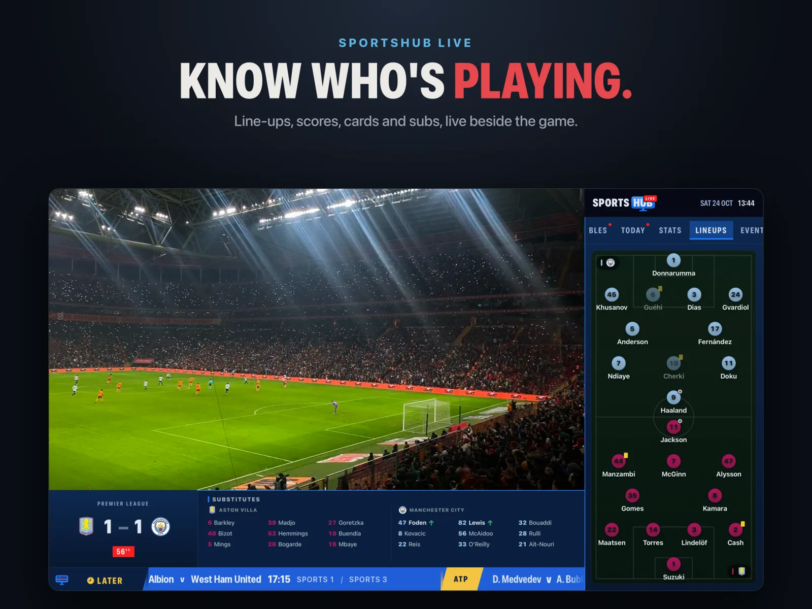

Sports Hub
The whole matchday.
Beside the game.
Every fixture and score, the channel showing it, live stats and tables around the picture, and every goal one press from a replay. Built into the player you already watch on.

The Hub
Every fixture. Every score. Live.
One place for every competition you follow, from the Premier League to the Ashes to the Super Bowl.
Your sports, your way.
Pick a sport, then a league, then a team. Favourite a whole league and every one of its clubs comes with it.
- Fixtures, results, highlights and the table for every league, one tap apart.
- Favourites gathers your teams' games from every competition into one list.
- Upcoming lines up every game you care about, with an alert before kick-off.
- A live ticker runs along the top with every game in play and today's whole card.


Channel matching
Tap a game. We find the channel.
TivEPG reads your whole playlist and TV guide and lists every channel showing the game, so you never hunt through hundreds of channels again.
- Official broadcasters first, then every other channel carrying it.
- Confidence on every match: Verified, Best Match or High, so you know which one to trust.
- Sources grouped: the same channel in HD, FHD and 4K becomes one row with its sources inside.
- In the TV guide too: your favourites' games are lit gold, and a sports programme in the guide opens its match details.

SportsHub Live
Watch the game. Follow every score.
Open it on any channel, at any time. The picture slides into the corner and a live data feed wraps around it, the way a broadcaster's graphics do. Close it and you're back to full screen.
Goals, as they go in.
A scrolling ticker carries every game in play. When someone scores, the goal flashes up and lands on the latest-scores board.
- No spoilers. IPTV runs up to a couple of minutes behind. TivEPG reads the match clock on your picture and holds each goal until it happens on your screen.
- Jump to any game. Pick a match off the Today board and TivEPG switches to a channel showing it.
- Not just on match channels. Watching the news? Open SportsHub Live and the tables, today's scores and your teams are all there.



Replay
Missed the goal? Press it.
Every key moment is listed as it happens. Press one and TivEPG rewinds your channel's catch-up to just before it, so you see it the way it was broadcast.
- Goals, cards, VAR calls, the foul behind a penalty, kick-offs, each with its team's crest and colour.
- No catch-up on your channel? TivEPG finds another channel showing the match that has it, and plays the moment there.
- Lands on the moment. In football it checks the clock on the rewound picture and corrects itself if it's off.
- Back to Live takes you straight back to the channel and the live picture you left.
- Works for football, cricket, NFL, NBA and NHL, in SportsHub Live and on the match page.

Highlights
Missed the game? Watch it back.
Every finished game from the last two weeks that has highlights, sorted the way you follow sport.
- Latest, then Your Teams, then a row for every competition you follow.
- Every source: official clips, extended highlights and alternatives, side by side.
- Spoiler-free mode keeps scores hidden until you've watched the game.
- Full Match. If a game went out on a channel with catch-up, TivEPG finds it in your provider's archive and plays the whole match from just before kick-off. Stop halfway and it remembers where you were.
- Cycling gets its own highlights, filed by race and stage.


Match Centre
Team news, the moment it lands.
Every game has its own page, with the channels to watch it at the top and everything about it underneath.
- Summary, Stats, Lineups, Table, H2H & Form and Scores, plus Replay once it's under way.
- Built for each sport: cricket scorecards and match situation, golf leaderboards and tee times, tennis draws, F1 timing and the circuit, NFL RedZone.
- Cup ties show the aggregate, the first leg and who goes through. Play-offs show the series state.
- Player of the match, recent form and head-to-head when the data has it.


Live tables & team pages
The table moves as the goals go in.
League tables are worked out from the live scores, so you see where everyone would finish if it ended now, not where they stood this morning.
- Live positions across every league with games in play.
- Knockout brackets for cups and play-offs, with series and aggregate scores.
- Team pages: the next match, the last five results as form tiles, league position, the next five fixtures and every result across competitions.
- Open a team from any table row, or tap a crest on a match page.


Sports
From kick-off to the 18th green.
Every sport gets fixtures, results and the channels showing it. These get live data you can open while you watch.
Replay needs a channel with catch-up from your provider.
Kick-off is waiting.
TivEPG is a player only. No channels, streams or subscriptions are included.